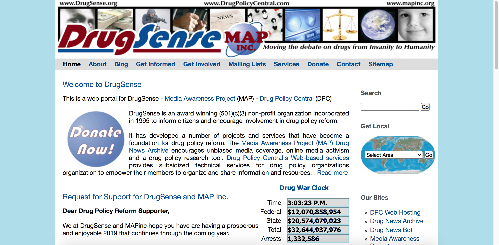
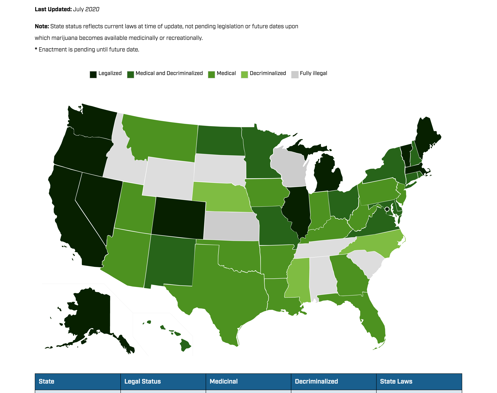

Research
A Gathering of Information About DrugSense
Findings from the DrugSense Website
DrugSense is an organization founded on ending the war on drugs, and they have two methods of doing so. The first is keeping people informed on the issue and the second is direct involvement in LOCAL government
Drugsense has three main calls to action: newsletters, petitions & mailings, and directly donating. The site praises their existing success stories in local US counties due to their mailings & petitions. Their social media is pretty much baron. The facebook page they have linked no longer exists, the myspace page is basically empty, and the youtube channel has three videos with little to do with the site or organization itself. Twitter seems to be their most active social media. Something important to note is that almost half of the people that were tweeting about drugsense were referring to the Drug War Clock. Although it seems tacky, it is in high enough demand to be non-negotiable.
Secondary Research
More and more countries are throwing in the towel when it comes cracking down violently on drugs. Two model nations of recent are Portugal and Switzerland, both of which suffered massive heroin addictions and HIV rates, and both of which were solved in a similar fashion. Harm reduction was their go-to method, basically replacing crime and prison with rehabilitation centers, sometimes providing free and clean heroin needles while social workers help those struggling. This was shown to drastically drop addiction, drug related crime, and HIV rates. As far as recent innovations go, there seems to be a lot of data that shows that many people see the war on drugs as a failure. Currently 11 states + DC have decriminalized marijuana and many elected officials stand against the war on drugs. Pulling back, organizations that successfully emphasize issues and show answers in a clear way include drugpolicy.org, and organization with its issues at the center of its design. It lines up resources to be informed on fantastically with a great call to action as well as learning more about the organization. Marketable data is thankfully an existing strength on the current DrugSense website. Twitter users have said they used the Drug war Clock— a live tally of state & federal funds used on the war on drugs as well as the arrests— to share with friends and promote the word on the war on drugs. This along with data already presented would be beneficial. Shock statistics that include race (ie. POC are 10x as likely than white americans to be arrested for drug abuse) may be beneficial in the current political landscape.
 The Success of the Drug Policy Alliance
The Success of the Drug Policy Alliance
This was the absolute best example I could find for an extremely smart and successful non-profit with very similar goals as DrugSense. It's time to dive into Three Reasons on what makes this so good compared.
Clarity - This is a night and day example of clarity for a website. Their goals are stated plainly for all to see. "It’s time for a new approach grounded in science, compassion, health and human rights." tells the user everything they need to know about the goals of the site
Organization - The website, obviously, is very pleasing to look at. Everything the user could need is exactly where you would expect it to be. The information is laid out before the viewer which is a direct contrast to the current DrugSense website, where the user can spend much more time than they were hoping to look for simple things.
Hierarchy - The Drug Policy Alliance has a strong sense of navigability as well as clear methods of getting there. It prioritizes the user being informed without question by showing them large obvious articles to click on.
This Website would function as a crucial reference for the developements for Drugsense to come.